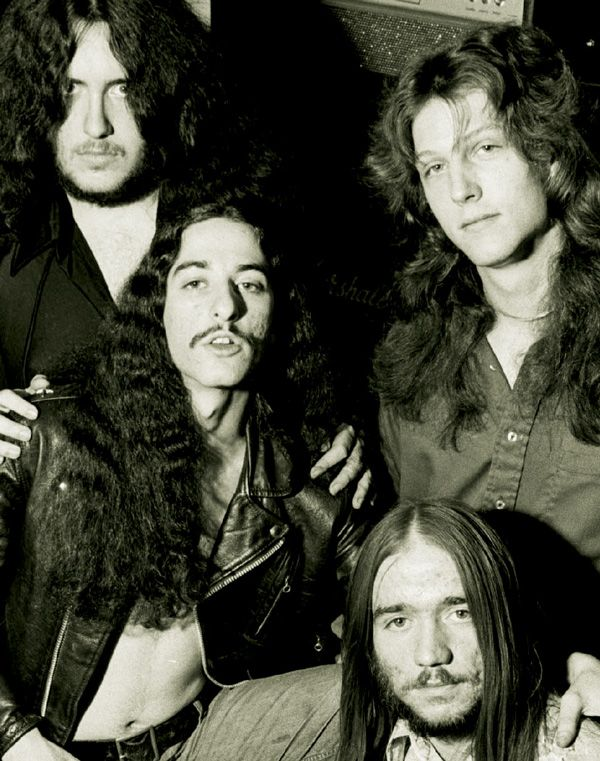
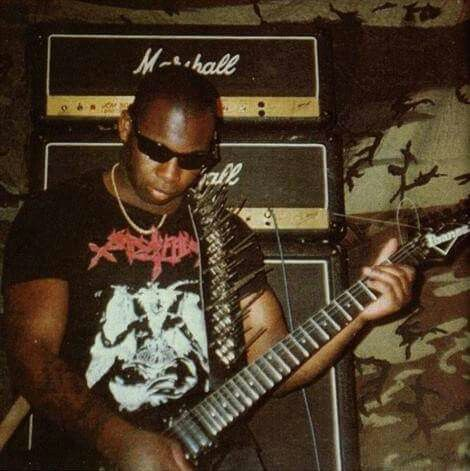
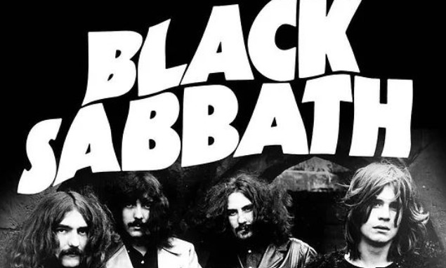
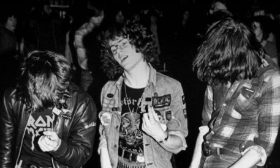

Overview
Doom metal is an extreme subgenre of heavy metal music that typically uses slower tempos, low-tuned guitars and a much "thicker" or "heavier" sound than other heavy metal genres. Both the music and the lyrics are intended to evoke a sense of despair, dread, and impending doom. The genre is strongly influenced by the early work of Black Sabbath, who formed a prototype for doom metal. During the first half of the 1980s, a number of bands such as Witchfinder General and Pagan Altar from England, American bands Pentagram, Saint Vitus, the Obsessed, Trouble, and Cirith Ungol, and Swedish band Candlemass defined doom metal as a distinct genre.
History

The first traces of doom in rock music could be heard as far back as the Beatles' 1969 track "I Want You (She's So Heavy)". Black Sabbath are generally regarded as the progenitors of doom metal. Black Sabbath's music is (in and of) itself stylistically rooted in blues, but with the deliberately doomy and loud guitar playing of Tony Iommi, and the then-uncommon dark and pessimistic lyrics and atmosphere, they set the standards of early heavy metal and inspired various doom metal bands. In the early 1970s, both Black Sabbath and Pentagram (also as side band "Bedemon") composed and performed this heavy and dark music, which would in the 1980s begin to be known and referred to as doom metal by subsequent musicians, critics and fans. Joe Hasselvander, Pentagram's drummer also cited bands like Black Widow, Toe Fat, Iron Claw, Night Sun, and Zior as pioneers of the doom metal sound.
Characteristics
The electric guitar, bass guitar, and drum kit are the most common instruments used to play doom metal (although keyboards are sometimes used), but its structures are rooted in the same scales as in blues. Guitarists and bassists often down tune their instruments to very low notes and make use of large amounts of distortion, thus producing a very "thick" or "heavy" guitar tone, which is one of the defining characteristics of the genre. Along with the usual heavy metal compositional technique of guitars and bass playing the same riff in unison, this creates a loud and bass-heavy wall of sound. Another defining characteristic is the consistent focus on slow tempos, and minor tonality with much use of dissonance (especially in the form of the tritone), employing the usage of repetitive rhythms with little regard to harmonic progression and musical structure.
Gallery


